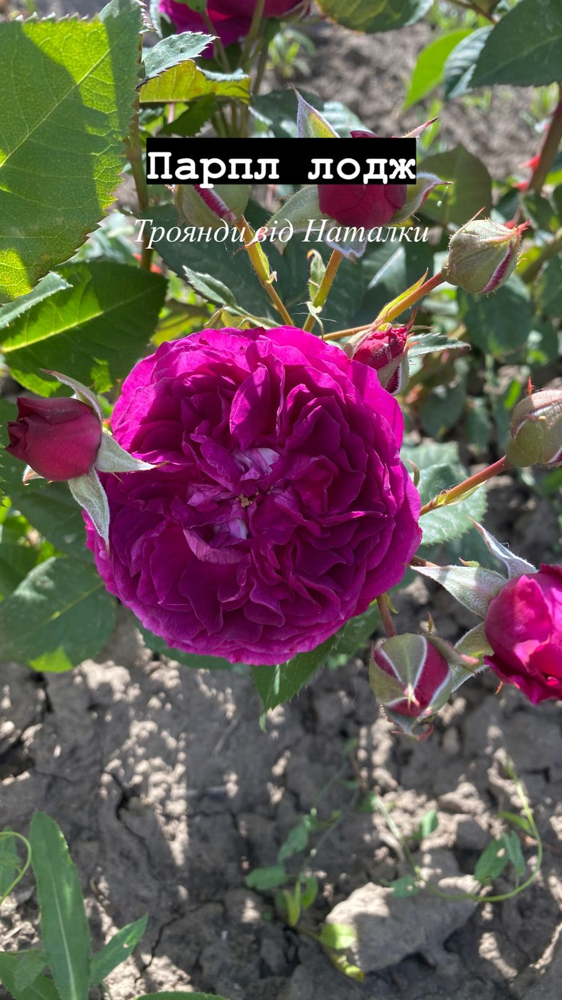
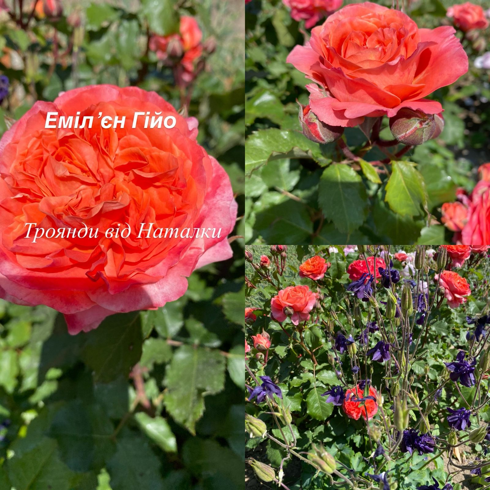
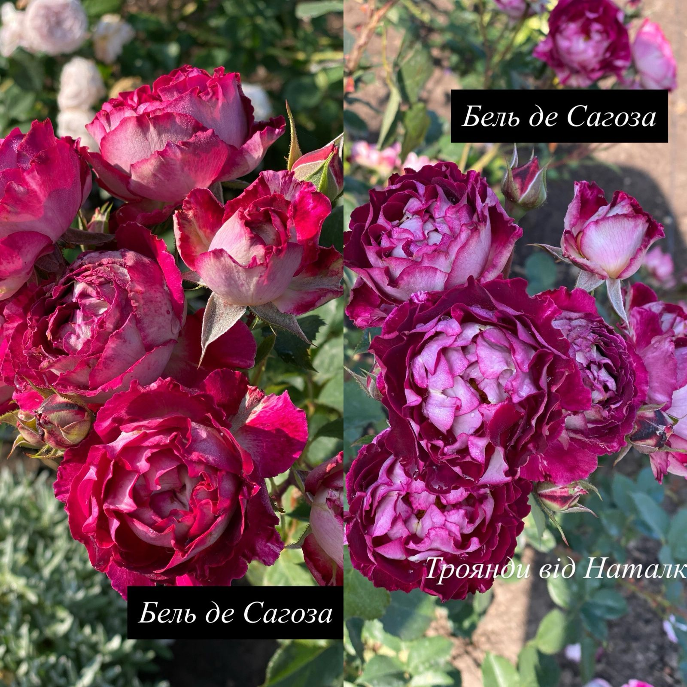
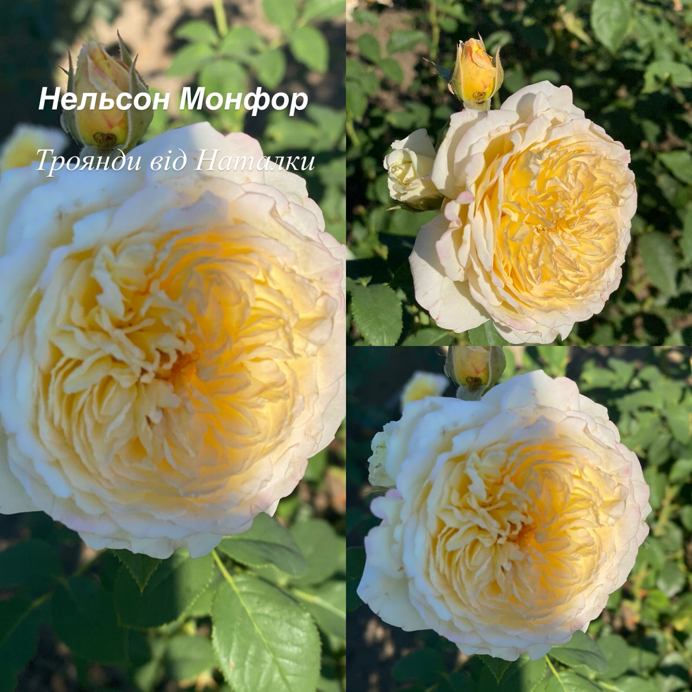
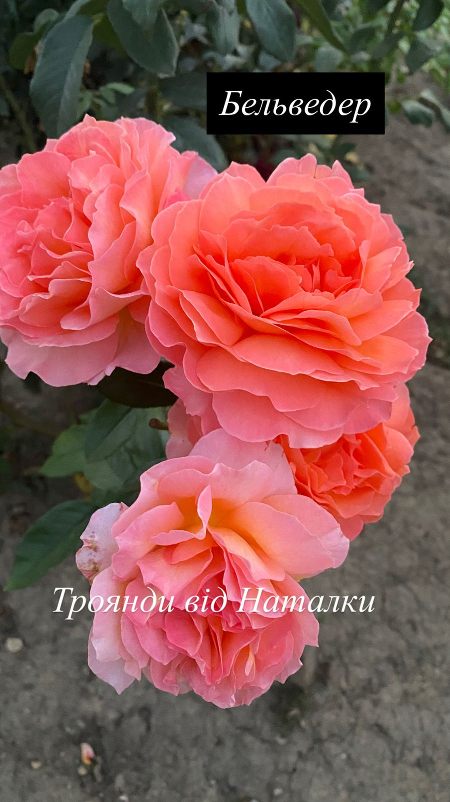
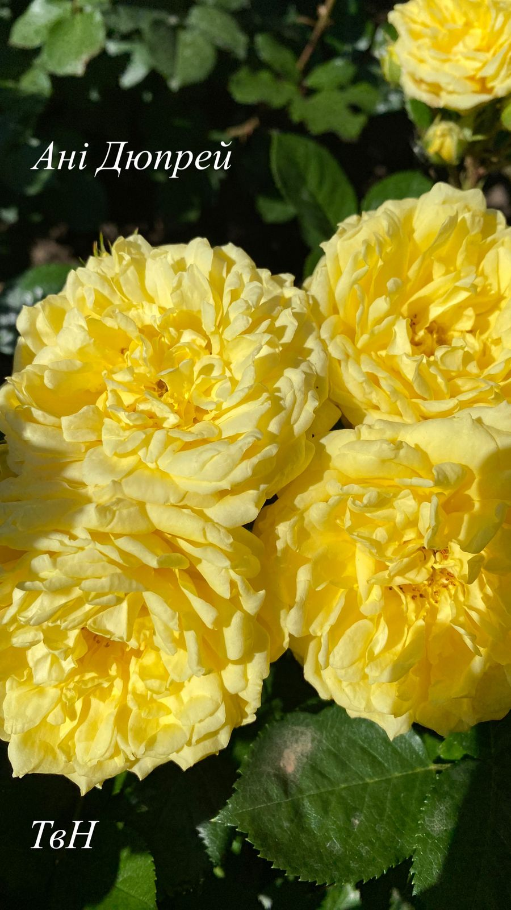
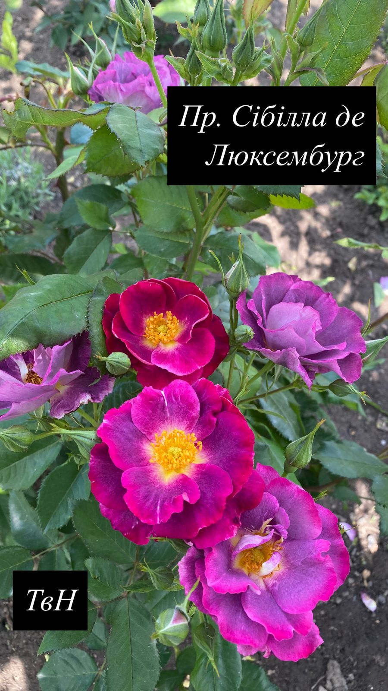
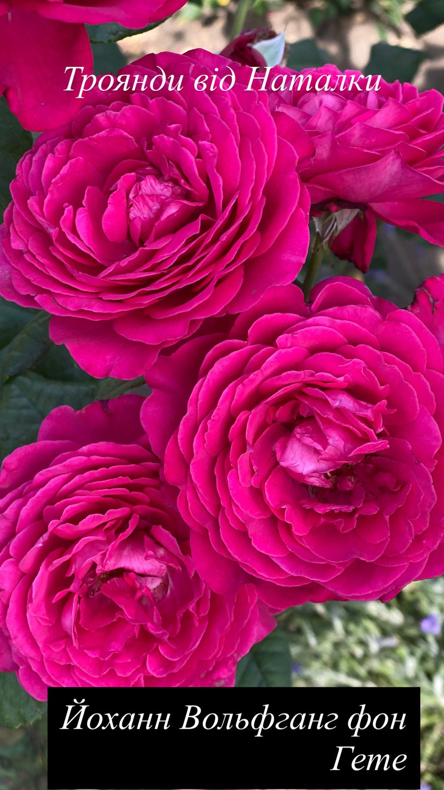
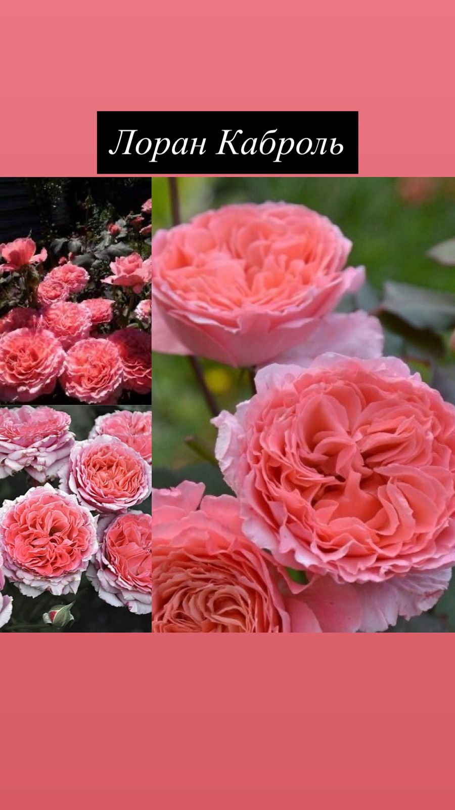
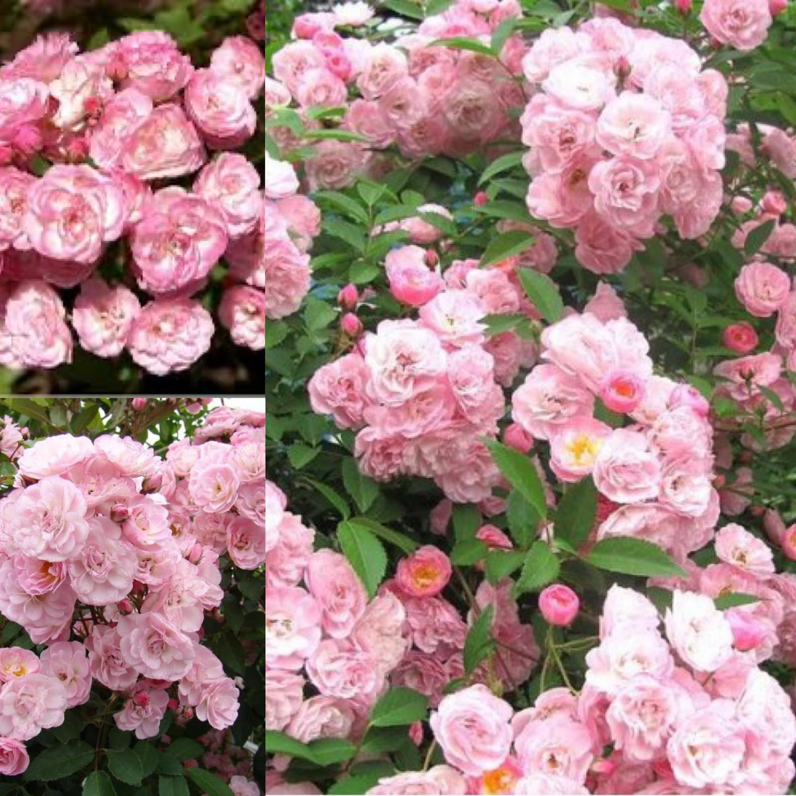

Парпл Лодж (Purple Lodge) — вишукана троянда з глибоким пурпурно-бордовим забарвленням квітів і легким оксамитовим блиском. Бутони густомахрові, класичної форми, з тонким солодким ароматом. Кущ прямостоячий, до 120–140 см, компактний, ідеально підходить для акцентів у саду.

Émilien Guillot (Емільєн Гійо) — тепла троянда з мідно-кораловими квітами, що розкриваються у великі чаші з хвилястими пелюстками. Аромат насичений, фруктово-пряний. Кущ високий, до 130–150 см, добре розгалужений. Цвіте хвилями до пізньої осені.

Belle de Saguès (Бель де Сагоза) — троянда з витонченими квітами пудрово-рожевого кольору з кремовими нотками. Квіти густомахрові, округлі, мають ніжний квітковий аромат. Кущ щільний, висотою до 120 см, рясно вкривається бутонами з червня до осені.

Nelson Monfort (Нельсон Монфор) — розкішна троянда з темно-малиновими, майже винними квітами і бархатистими пелюстками. Аромат виразний, з нотами смородини та червоних фруктів. Кущ високий — до 150 см, добре підходить для вертикального акценту.

Belvédère (Бельведер) — троянда з великими квітами ніжного абрикосово-рожевого тону, що формуються в пишні кисті. Аромат легкий, фруктовий. Кущ прямостоячий, до 140 см, добре тримає форму. Сорт вирізняється тривалим цвітінням і декоративністю.

Anny Duperey (Ані Дюпрей) — витончена троянда з ніжно-рожевими квітами з ледь кремовим відтінком. Квіти чашоподібні, густомахрові, мають приємний легкий аромат. Кущ округлий, до 110–120 см, рясно квітне, стійкий до дощу та хвороб.

Princesse Sibilla de Luxembourg (Принцеса Сибілла де Люксембург) — класична троянда з густомахровими квітами глибокого рожевого кольору з бузковим відтінком. Аромат солодкий, середньої сили. Кущ пишний, до 120 см заввишки, з темним листям і повторним цвітінням.

Johann Wolfgang von Goethe (Йоханн Вольфганг фон Ґете) — вражаюча троянда з великими, махровими квітами глибокого пурпурно-фіолетового кольору, що темніють до бордового. Аромат сильний, насичений. Кущ до 140–160 см, прямостоячий, добре розвивається на сонці.

Laurent Cabrol (Лоран Каброль) — ніжна троянда з кремово-рожевими квітами середнього розміру, що розкриваються у витончені чаші. Аромат легкий, квітковий. Кущ компактний, до 110 см, щільний і акуратний. Цвіте хвилями до пізньої осені.

Троянда «Хевенлі Пінк» (Heavenly Pink) — це вишуканий мускусний гібрид селекції Lens (Бельгія, 1997 рік). Сорт славиться рясним, безперервним цвітінням з червня до морозів та великими пірамідальними суцвіттями, які дуже нагадують волотисту гортензію.🌸 Основні характеристикиКвіти: дрібні (3–4 см у діаметрі), густомахрові, ніжно-рожевого відтінку з легким фіолетовим тоном.Цвітіння: безперервне, утворює величезні «зефірні» букети, що довго тримаються на кущі.Кущ: прямостоячий, компактний, висотою 80–120 см та шириною до 100–120 см.Аромат: ніжний, ледь помітний